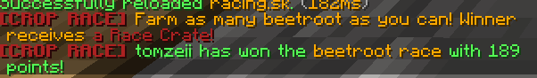
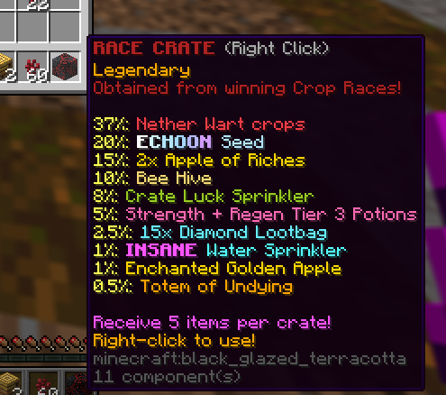
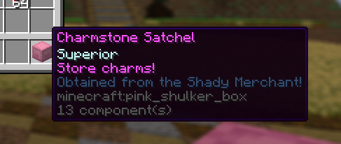
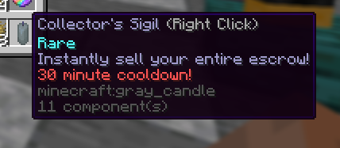
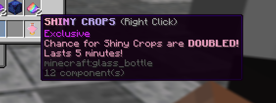
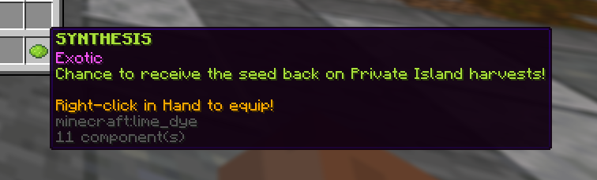
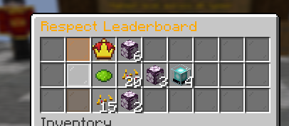

To preface, I apologize for the smaller update. Our key focus for this, and next update is for bug fixes. If you know of any, let us know on Discord!
Added
Crop Races
Race to receive ultimate rewards!
Races randomly start every 30 minutes.
Farm the nominated crop to receive points.
Winners of crop races receive the new RACE CRATE!

Race Crate
The Race Crate contains tons of overpowered goodies!
Including a chance at the Exclusive INSANE Water Sprinkler!

Charmstone Satchel
The Shady Merchant has a new item!
Pick up the new Charmstone Satchel to store charms.

Collector's Sigil
A new highly useful tool!
The Collector's Sigil item instantly sells your ENTIRE ESCROW!
Be warned, it has a 30 minute cooldown.
This can be found in the Tier 3 of Travelling Merchant.

Shiny Crops Potion
Once exclusive, now available!
The Shiny Crops Potion doubles your chances at Shiny Crops!
Lasts 5 minutes!
This can be found in the Tier 3 of Travelling Merchant.

Synthesis Charm
Push the limits on your Private Islands!
Grab the new Synthesis charm for a chance to receive the seed back after harvesting!
Found in the Season Shop!

Respect Leaderboard
Exclusive Rewards are up for players with the highest respect level from Season Shop!
#1 - Medallion Charm, 6x EXCLUSIVE Chorus Flower
#2 - Synthesis Charm, 20x ULTIMATE Seeds, 3x EXCLUSIVE Chorus Flower, 4x INSANE Water Sprinkler
#3 - 15x ULTIMATE Seeds, 2x EXCLUSIVE Chorus Flower
Good luck! Winners will be picked on Update next week!

Trading
Sometimes using the Marketplace isn't the way to go.
Especially when looking to trade item-for-item.
You can now trade users with /trade (username)!

Fixed
There's more small things that aren't listed here. :)
- Shiny Quest exploit
- Silver crate drop chance
- Added click to teleport when 0 durability
- Added view quest in chat when attempting to sell crop needed for shiny quest
- Farmer Mouldroot now only takes Wheat instead of Echoon
- Luxuriant charm items now go to escrow
- Money now resets on rebirth
- Added chat filter external plugin
- Added anticheat
- Added /ft and /fst as aliases for Fast Travel
- Added rebirths leaderboard: /lb:rebirths
- Added gems leaderboard: /lb:gems
- Locked crops no longer show in Rainbow Machine
- Rainbow Machine now requires 64x (a stack) of crops as opposed to 50x
- Removed Farm Pack from store (now limited)
- Season Shop items now show amount of respect given at bottom
- Right-clicking rainbow tokens now opens Rainbow Machine menu
- Pollinated loot table changes
- New automessages
~ Apologies, this update was a little smaller than usual. I focussed on UX for newer players and general bug fixes. Next week: Farm Level and Rebirth reset for Season 2!